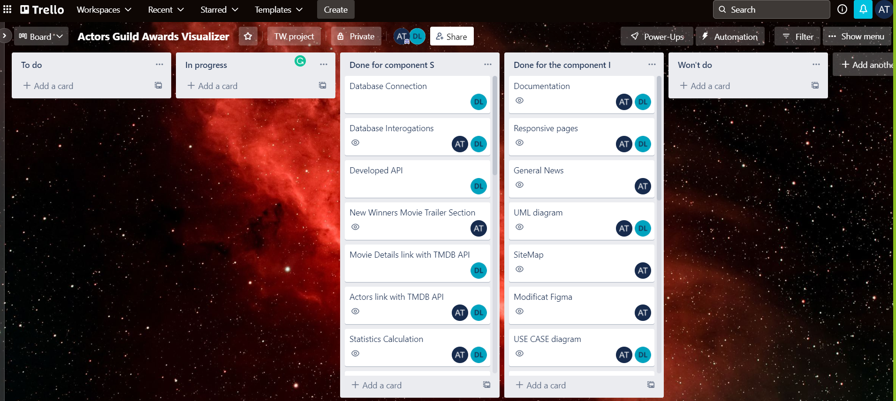

AGA (Actors Guild Awards Visualizer)
Authors
- Leagan D. Dan-Adrian
- Tablan C. Andrei-Razvan
1. Introduction
1.1 Purpose
The purpose of this document is to present a web application used to vizualize the actors nominalization in the last years at Screen Actors Guild Awards. This file is intendet to show to the user the features of the application.
1.2 Document Conventions
This Document was created based on the IEEE template for System Requirement Specification Documents.
1.3 Intended Audience and Reading Suggestions
Users who are interested in movies and the awards given for actors. This document may be used also for the understanding of the code behind the application by any developer, tester or project manager.
1.4 Product Scope
Actors Guild Awards Visualizer intends to help people by all ages see the nominalizations and the winners for all 13 categories in the SAG awards.
1.5 References
2. Overall Description
2.1 Product Perspective
The Actors-Guild-Awards-Visualizer web application is a new selfcontained product which will help people interact with eachother by seeing other comments on actors pages. They can also use it for visualizing statistics based on the nominalizations in different years.
2.2 Product Functions
The application manages different pages for users: Home, Winners, Forum, Movie Details, Actors, Admin, Statistic1, Statistic2, Statistic3. The application offers the option of exporting different statistics in formats such as CSV, WebP,SVG and PNG. It also allows users to search for informations about movies and actors, and view news.
Home page : This is the landing page and it contains the general informations for this website, the latest news about the event, different movie trailers, and a search system for search different news on Google.
- search for anything: the users will be able to search news directly on Google
- general news : it shows general news about the SAG awards
- new winners 2022 section: redirects the user to a movie trailers
- the main menu : it redirects to other pages
Winners page : It shows the winners for a specific category and year
- choose year : selects the year
- choose category : selects the winner for a category in the selected year
- view news: redirects to specific news for the selected year
- about section: redirects to a wikipedia page about the selected year
- the main menu : it redirects to other pages
Forum page : Gives the users the oportunity to post or read messages from other users
- username : the user sets the name associated with the message
- message : the user writes and then sends the message
- the main menu : it redirects to other pages
Movie details page : It shows informations about a searched movie
- search bar : the user introduces the name of the wanted movie
- viewing information : the information (image, name, release date, score, overview) will be displayed on the screen
- the main menu : it redirects to other pages
Actors page: It shows informations about a searched actor
- search bar : the user introduces the name of the wanted actor
- viewing information : the information (image, name, biography, department, popularity, place of birth, birthday, deathday, imdb link) will be displayed on the screen
- the main menu : it redirects to other pages
Admin page: Allows an user to log in as an administrator, in order to insert or delete a nominalization from the database
- login form : the user inputs an admin account in order to acces the insert/delete form
- insert/delete form: the user provides information about the desired nominalization
- the main menu : it redirects to other pages
Statistic1 page : It show a statistic about how many winners contains the database, in a selected year
- choose year : it lets user choose the year for a specific statistic
- view statistic : a visual representation of the statistic
- export statistic: exports the statistic as WebP, SVG, CSV, PNG
- the main menu : it redirects to other pages
Statistic2 page : It show a statistic about how many nominalizations there are, in every category, in a selected year
- choose year : it lets user choose the year for a specific statistic
- view statistic : a visual representation of the statistic
- export statistic: exports the statistic as WebP, CSV, PNG
- the main menu : it redirects to other pages
Statistic3 page : It show a statistic about how many men and women were nominated, in a selected year
- choose year : it lets user choose the year for a specific statistic
- view statistic : a visual representation of the statistic
- export statistic: exports the statistic as WebP, SVG, CSV, PNG
- the main menu : it redirects to other pages
2.3 User Classes and Characteristics
- Common user : can view the informations the site provides.
- administrator : can insert/delete information from the database
2.4 Operating Environment
The application will run on any device with access to the internet and an installed browser.
2.5 Design and Implementation Constraints
Actors-Guild-Awards-Visualizer application will use javascript, html, css and php
2.6 User Documentation
We will provide the user a tudorial in which we will explain how the website can be used.
2.7 Assumptions and Dependencies
The application depends on :
- News sites in order to provide reliable news for the users.
- IMDB, Wikipedia and Google for searching specific news and information by the users.
- TMDB API for providing general information about movies and actors.
- Restful API in order to communicate with the database.
3. External Interface Requirements
3.1 User Interfaces
These are some pages we implemented.
3.2 User Steps
3.3 Hardware Interfaces
The minimum software requirements of Actors-Guild-Awards-Visualizer application are a working device and connection to the Internet.
3.4 Software Interfaces
The minimum software requirements of Actors-Guild-Awards-Visualizer application are a working browser.
3.5 Communications Interfaces
Actors-Guild-Awards-Visualizer requires Internet connection. The communication standard that is to be used is HTTP.
4. System Features
4.1 Navigation menu
Users can navigate to other pages in order to use other functionalities from the website.
4.2 Search bar
Users can search the news on Google Search.
4.3 Trailers and News
Some images and texts have attached hyperlinks to relevand news, trailers and information providers from the internet
4.4 Winners display
Users can choose a specific category and year. After choosing the category by pressing on a collapsible button, the API will get the 2 informations selected. The two informations are handled by a controller, that will call another php script, in order to query the database with the selected category and year paramteres. After the query is done, the entries from the database are displayed under every colapsible button.
4.5 Forum functionality
After entering the forum page, a call to the database will be made, which will query every message sent by every user. On the bottom of the page, there is a form, used for writing a new message. The user enters the username and message, and after pressing send, the API will insert the information in the database.
4.6 TMDB API call
The TMDB API is integrated with the backend, the php scripts that manage the Movie Details and Actor page, making calls to the external API. The JSON that is returned by the API is used to generate and display different informations like name, poster, etc.
4.7 AJAX
We used AJAX in order to create the Admin page. For an user, to log in as an admin, it is required to input the username and password in a form. After the login is completed and verified, ajax replaces the login form, with a form designed to insert or delete information in the database.
4.8 Charts, export statistics
The backend provides ways of calculating statistics based on the database, draws charts based on the calculated statistics, and exports them in 3 or 4 manners.
4.9 Database
We used MongoDB to store our information, the backend having the responsability to connect to the database, query the database based on our requests, and sending to the front page, the informations found.
4.10 Arhitecture
The arhitecture of the project is organised in an MVC manner. The View is represented by the front pages, the Model is represented by the php scripts that connect to to Database or the external API, and the Controller links the View to the Model.
5. Other Nonfunctional Requirements
5.1 Safety Requirements
The data is stored in databases to ensure that the informations are not lost.
5.2 Security Requirements
We require that not anybody can insert or delete nominalizations from the database. To do so, it is required to log in as an administrator first.
6. Architecture
6.1 Application Sitemap

6.2 Communication with the backend
The communication with the backend is assured by the
calls from the frontend pages, while the backend gets
the parameters or other informations it needs, in order
to perform the tasks.
Depending on the requests, or the controllers called, an
action will be performed by model part of the backend.
We used the php language in order the implement the
backend.
We used different calls for different controllers,
that assign the roles of querying the database, calling
the external API, displaying news, etc.
Another important functionality is related to the
statistics pages. The pages create charts and is able to
export them.
The Winners page also required a php implementation
in order to place the actors that won an award,
according to the category and year of their
nominalization.
The Home page also needed backend implementation
especially for the search bar and the news
functionality. A valid search or a click on one of the
news redirects the user to a specific page.
6.3 Data flow structure
6.4 Code Structure

6.5 Data base structure
We used two databases implemented with MongoDB.
One represents the nominations of the Screen Actors
Guild Awards.
The other database is used to implement the forum page,
and stores the messages and the usernames that wrote a
message.
We used the database existent on Kaggle
that contains informations about actors, nominalizations
and winners.
The database for actors is made of the following
atributes:
- year: The year of the nominalization. We will use
this attribute in oreder to place the actor in the
statistics and winner pages.
- category: The category where the actor is
nominated. We will use this atribute in order to place
the actor in the winners page.
- full_name: The full name of the actor nominated.
We will use this atribute in order to create the actor's
page.
- show: The show the actor nominated played in.
- won: This attribute is boolean and indicates
whether the actor won the nominalization or not.
The database for forum stores the message and the
username.
Contribution
Leagan Dan-Adrian and Tablan Andrei-Razvan
You can see the contribution of each member in the image-link for the Trello workspace bellow: